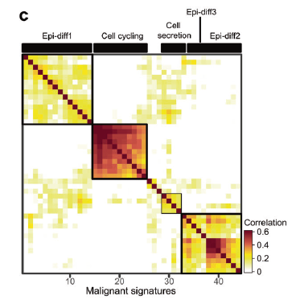
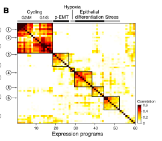

FigureYa223scNMF
Rongfang Shen; Ying Ge, Yijing Chen
2025-5-20
需求描述
requirement description
对单细胞癌上皮数据每个样品进行NMF非负矩阵分解后得到的programs后进行无监督聚类，得到主要cluster后，定义其meta-signature，复现出下图。
After performing NMF (Non-negative Matrix Factorization) on each sample of single-cell carcinoma epithelial data to obtain the programs, unsupervised clustering is conducted. After obtaining the main clusters, their meta-signatures are defined, and the following figure is reproduced.

出自https://www.nature.com/articles/s41422-020-0374-x
图2 鼻咽癌中揭示的恶性细胞簇与常见恶性特征 c 热图展示了源自11个肿瘤的44个代谢基因的成对相关性。聚类分析在各肿瘤中识别出五种一致的恶性基因表达特征。
提需求的小伙伴还找到2017年的这篇Cell文章里也有这图：
fromhttps://www.nature.com/articles/s41422-020-0374-x
Fig. 2 Malignant cell clusters and common malignant signatures revealed in NPC. c A heatmap depicts the pairwise correlations of 44 metagenes derived from 11 tumors. Clustering identified five coherent malignant gene expression signatures across the tumors.
The colleague who raised the request also found this figure in this 2017 Cell article:

出自https://linkinghub.elsevier.com/retrieve/pii/S0092867417312709
图3. 无偏聚类揭示头颈部鳞状细胞癌中p-EMT的共同表达程序 (B) 热图展示了来自十个肿瘤的60个肿瘤内表达程序的成对相关性（如(A)所示）。聚类分析识别出七个跨肿瘤的协调表达程序。热图中对应MEEI25样本的程序行以箭头标注，并按(A)中的编号标示。
fromhttps://linkinghub.elsevier.com/retrieve/pii/S0092867417312709
Figure 3. Unbiased Clustering Reveals a Common Program of p-EMT in HNSCC Tumors (B) Heatmap depicts pairwise correlations of 60 intra-tumoral programs derived from ten tumors, as in (A). Clustering identifies seven coherent expression programs across tumors. Rows in the heatmap that correspond to programs derived from MEEI25 are indicated by arrows and numbered as in (A).
应用场景
application scenario
提出问题：像例文这种鼻咽癌的肿瘤样本，异质性较大。如果按照Seurat的降维聚类流程所聚集的类别，主要变异来源于样品，而不是其生物学特性，这不是我们想要的。
怎样解决这个问题呢？例文利用NMF找出每个样品不同的生物学功能program后，对program进行聚类，从而找到上皮样品间共有的生物学功能。具体做法：
例文共有11个肿瘤组织，7581个恶性上皮细胞。作者做NMF的时候对每个肿瘤都固定了k = 4，总共得到11 X 4个program。
然后对这些program进行聚类，找出在癌上皮中共有的生物学功能改变。
最后找出这些signature的metagene，对每个MalignantSig里的每个program前100个基因算其平均的gene loading，选择前30个最高loading的基因作为该signature的marker genes；
定义metagene这一块大家可以借助以往处理bulk数据的经验，合理即可。
原文：We then applied dimension reduction analyses, specifically non-negative matrix factorization (NMF), and identified a total of 44 metagenes that were preferentially co-expressed by subpopulations of malignant cells across tumors (Supplementary information, Table S4). Then, hierarchical clustering was used to characterize these 44 metagenes into gene expression signatures, and high concordance was shown among five signatures (Fig. 2c; Supplementary information, Table S5). For each signature, we then combined the top 100 genes of each metagene and calculated the average loadings for each gene. We summarized the total loadings for repetitive genes, retained the original loadings for exclusive genes, and divided the loadings of each gene by the number of metagenes within the signature. Finally, the top 30 genes with the highest loading were defined as the marker genes for the signature.
仔细读全文，小丫发现例文的很多图我们都有相应的FigureYa啦！例如：
FigureYa166scCNV能帮你实现例文1的Figure 1c 和例文2的Figure 1B。用 单细胞RNA-seq数据计算CNV，用来separate the malignant cells from the non-malignant cells with normal karyotypes.FigureYa194pySCENIC能帮你实现例文1的Figure 4i，用SCENIC找出potential TFs underlying the regulation across subtypes.FigureYa178receptorLigand能帮你实现例文1的Figure 6，用CellPhoneDB找出ligand–receptor pairs and molecular interactions among the major cell types.
Raising the issue: Tumour samples from nasopharyngeal carcinoma, such as those in the example text, exhibit considerable heterogeneity. If the categories clustered according to Seurat's dimensionality reduction clustering process, the main variation derive from the samples rather than their biological characteristics, this is not what we desire.
How to address this issue? The example utilizes NMF to identify distinct biological functional programs in each sample, and then clusters these programs to discover shared biological functions among epithelial samples. The specific approach is as follows:
The example includes 11 tumor tissues with 7,581 malignant epithelial cells. The author fixed k = 4 for each tumor when performing NMF, resulting in a total of 11 X 4 programs. -These programs are then clustered to identify shared biological functional changes in cancerous epithelium.
Finally, the metagenes of these signatures are determined. For each program within each MalignantSig, the average gene loading of the top 100 genes is calculated, and the top 30 genes with the highest loading are selected as the marker genes for that signature.
In defining the metagene, you can draw on your past experience with bulk data processing; as long as it is reasonable.
Original text: We then applied dimension reduction analyses, specifically non-negative matrix factorization (NMF), and identified a total of 44 metagenes that were preferentially co-expressed by subpopulations of malignant cells across tumors (Supplementary information, Table S4). Then, hierarchical clustering was used to characterize these 44 metagenes into gene expression signatures, and high concordance was shown among five signatures (Fig. 2c; Supplementary information, Table S5). For each signature, we then combined the top 100 genes of each metagene and calculated the average loadings for each gene. We summarized the total loadings for repetitive genes, retained the original loadings for exclusive genes, and divided the loadings of each gene by the number of metagenes within the signature. Finally, the top 30 genes with the highest loading were defined as the marker genes for the signature.
Read the entire text carefully, and Xiao Ya found that we have corresponding FigureYa for many of the figures in the example text! For instance:
FigureYa166scCNVcan help you achieve Figure 1c from Example Text 1 and Figure 1B from Example Text 2. It uses single-cell RNA-seq data to calculate CNV to separate the malignant cells from the non-malignant cells with normal karyotypes.FigureYa194pySCENICcan help you achieve Figure 4i from Example Text 1, using SCENIC to identify potential TFs underlying the regulation across subtypes.FigureYa178receptorLigandcan help you achieve Figure 6 from Example Text 1, using CellPhoneDB to identify ligand–receptor pairs and molecular interactions among the major cell types.
环境设置
environment setting
使用国内镜像安装包
use the domestic mirror installation package
xxxxxxxxxxoptions("repos"= c(CRAN="https://mirrors.tuna.tsinghua.edu.cn/CRAN/"))options(BioC_mirror="http://mirrors.tuna.tsinghua.edu.cn/bioconductor/")install.packages("Seurat")BiocManager::install("AUCell")BiocManager::install("GEOquery")加载包
load package
xxxxxxxxxxlibrary(NMF)library(data.table)library(ggsci)library(pheatmap)library(AUCell)library(GEOquery)library(tidyverse)library(Seurat)library(RColorBrewer)library(corrplot)Sys.setenv(LANGUAGE = "en") #显示英文报错信息 display English error messagesoptions(stringsAsFactors = FALSE) #禁止chr转成factor prohibit the conversion of chr to factor自定义函数，用clusterProfiler做富集分析。
这里用最常用的两种注释数据库做富集分析：KEGG和GO的biological process。 GO ORA KEGG ORA
也可以修改函数，用自己喜欢的注释数据库做富集分析。可参考FigureYa209batchEnrich，找到适合你的数据的注释数据库。
Customised functions for enrichment analysis using clusterProfiler.
Here, enrichment analysis is performed using the two most commonly employed annotation databases: KEGG and GO biological processes. GO ORA KEGG ORA
Alternatively, you may modify the function to perform enrichment analysis using your preferred annotation database. Refer to FigureYa209batchEnrich to identify an annotation database suitable for your data.
xxxxxxxxxxMyenrich <- function(genes, category = c("kegg", "gobp"), geneid = c("SYMBOL", "ENTREZID", "ENSEMBL", "UNIPROT")){ library(clusterProfiler) category <- match.arg(category) geneid <- match.arg(geneid) if (geneid != "ENTREZID"){ genes <- bitr(genes, fromType = geneid,toType ="ENTREZID",OrgDb="org.Hs.eg.db") %>% .[, 2] %>% as.character() }else{genes <- genes} if (category == "kegg"){ enrich <- enrichKEGG(genes, organism = "hsa",keyType = "kegg", pAdjustMethod = "BH",pvalueCutoff = 0.05, qvalueCutoff = 0.05, maxGSSize = 5000) } if (category == "gobp"){ enrich <- enrichGO(genes, OrgDb="org.Hs.eg.db",ont= "BP",pAdjustMethod = "BH", pvalueCutoff = 0.05,qvalueCutoff = 0.05, readable = TRUE) } return(enrich)}输入文件
Input file
文件较大，已上传至微云https://share.weiyun.com/mpXIOggi
数据下载：从GEO数据库下载GSE150430的GSE150430_npc_scRNA_hg19_processed_data.txt.gz文件，https://www.ncbi.nlm.nih.gov/geo/query/acc.cgi?acc=GSE150430，解压、预处理。
The file is rather large and has been uploaded to Weiyun: https://share.weiyun.com/mpXIOggi
Data download: Download the GSE150430_npc_scRNA_hg19_processed_data.txt.gz file from the GEO database (GSE150430), https://www.ncbi.nlm.nih.gov/geo/query/acc.cgi?acc=GSE150430, decompress and preprocess it.
xxxxxxxxxx# 需要大内存，练习时可直接跳到下一步“运行NMF”# This process requires a large amount of memory, when practicing, you can directly skip to the next step "Run NMF"dat <- read.table("GSE150430_npc_scRNA_hg19_processed_data.txt", header = T, sep = "\t")celldat <- dat[1, , drop = F] %>% t() %>% as.data.frame()epicells <- celldat[celldat$Cell_type == "Malignant", , drop = F] %>% rownames() epidat <- dat[-1, ] %>% .[, colnames(.) %in% epicells]write.table(epidat, file = "GSE150430Malignant.txt", sep = "\t", quote = F)运行NMF
Run NMF
对P01样本1834个细胞，选择sd最高的6000个基因进行nmf分析，本FigureYa作者的运行时间约为23min。
作者在运行nmf的时候，nrun选择的是4；一般而言我们还是运行多个run，针对每个样品，选择一个最佳的nrun值。具体怎样选择最佳个数，可以参考FigureYa158MutationPattern。
For the P01 sample consisting of 1,834 cells, the top 6,000 genes with the highest standard deviation were selected for NMF analysis. The author's runtime for this figure was approximately 23 minutes.
When running NMF, the author chose nrun to be 4; however, it is generally advisable to run multiple runs and select the optimal number of nrun for each sample. For guidance on how to choose the best number, you can refer to FigureYa158MutationPattern.
xxxxxxxxxxepidat <- read.table("GSE150430Malignant.txt", header = T, sep = "\t")boxplot(epidat[, 1:6]) # 数据已经经过log转换过的 The data has already been log-transformed
x
patients <- str_split(colnames(epidat), "_") %>% sapply(., "[[", 1) %>% unique()patients
#各个样品其鉴定到的上皮细胞数#The number of epithelial cells identified in each sampletable(str_split(colnames(epidat), "_") %>% sapply(., "[[", 1))xxxxxxxxxx# 参数# Parameterstopn <- 6000ranks <- 4耐心等待，小丫的电脑跑了一天。练习时可先跳过这步，直接进入“NMF program聚类”。
Please be patient, Xiaoya's computer has been running all day. During practice sessions, you can skip this step and proceed directly to the "NMF program clustering".
xxxxxxxxxx# 单细胞数据基因有很空值，为了降低噪音，我们选择sd变化前6000个基因进行NMF# Single-cell data contains numerous gene null values. To reduce noise, we select the top 6,000 genes by standard deviation variation for NMFfor (i in patients){ if (!dir.exists("nmfSingle")){ dir.create("./nmfSingle") } if (!dir.exists(paste0("nmfSingle/", i))){ dir.create(paste0("nmfSingle/", i)) } nmfdat <- epidat[, str_detect(colnames(epidat), i)] ## Step 02: chose top 6000 genes with highest sds nmfdat[nmfdat < 0] <- 0 #小于零的基因值用0代替 Negative gene values are replaced with 0 genesd <- apply(nmfdat, 1, sd) topNgene <- genesd[order(genesd, decreasing = T)][1:topn] nmfdat <- nmfdat[rownames(nmfdat) %in% names(topNgene), ] # nrun可以选择在30-50之间 # nrun can be selected between 30 and 50 print(system.time(res_4 <- nmf(nmfdat, rank = ranks, method="brunet", nrun=30, seed=123456))) signature <- NMF::basis(res_4) # consensusdat <- res_4@consensus #consensus matrix，可以保存出来自己画样品聚类图 consensus matrix, which can be saved to generate your own sample clustering diagram # 看聚类的轮廓值 # View the contour values of the clustering # si <- silhouette(res_4, what = 'consensus') # sicluster <- si[1:ncol(nmfdat), ] # 保存NMF的一些聚类图 # Save some cluster plots from NMF # tiff(paste0("./nmfSingle/", i, "/consensus_", topn, ".tiff"), # width = 6*480, height = 4*480, res = 300) # consensusmap(res_4) # dev.off() # tiff(paste0("./nmfSingle/", i, "/basicmap_", topn, ".tiff"), # width = 8 * 480, height = 4*480, res = 300) # basismap(res_4) # dev.off() # tiff(paste0("./nmfSingle/", i, "/coefmap_", topn, ".tiff"), # width = 8 * 480, height = 4*480, res = 300) # coefmap(res_4) # dev.off() colnames(signature) <- paste0(i, "_", 1:ranks) signature <- as.data.frame(signature) # 保存数据 # Save data write.table(signature, paste0("./nmfSingle/", i, "/singature", topn, ".txt"), sep = "\t") # saveRDS(res_4, file = paste0("./nmfSingle/", i, "/res", ranks, "_", topn, ".rds")) print(paste0("NMF for the", i, "is Done!"))}NMF program聚类，画图
NMF program clustering and graphing
x
# 提取program# Extract programtopRank <- 100programG <- list()for (i in 1:length(patients)){ filedir <- paste0("./nmfSingle/", patients[i], "/singature", topn, ".txt") geneloading <- read.table(filedir, header = T, sep = "\t") geneloading$maxC <- apply(geneloading, 1, which.max) %>% paste0(patients[i], "_", .) topgenelist <- rownames_to_column(geneloading, var = "gene") %>% pivot_longer(., cols = starts_with("P"), names_to = "program", values_to = "loading") topgenelist <- dplyr::filter(topgenelist, maxC == program) %>% group_by(maxC) %>% top_n(n = topRank, wt = loading) topgenelist <- split(topgenelist$gene, topgenelist$maxC) programG <- c(programG, topgenelist)}
#对上皮细胞进行打分，这里我们选择AUCell#Score the epithelial cells, here we choose AUCellcells_rankings <- AUCell_buildRankings(as.matrix(epidat), nCores = 5, plotStats=TRUE)
xxxxxxxxxxcells_AUC <- AUCell_calcAUC(geneSets = programG, cells_rankings, aucMaxRank=nrow(cells_rankings)*0.05)programAUC <- getAUC(cells_AUC)下面进行聚类
这一步需要自己看聚类结果，调整clusterK的数量。
Next, let's proceed with clustering
This step requires you to look at the clustering results yourself and adjust the number of clusterK.
x
clusterK = 7M <- cor(t(programAUC), method = "pearson")
#用corrplot画图，便于标出各cluster的黑色方框#Plot using corrplot to facilitate labelling each cluster with a black box#pdf("scNMF.pdf")corrplot(M, method = "color", #用颜色展示相关系数，还可以改为"circle" (default), "square", "ellipse", "number", "pie", "shade" Display correlation coefficients using colour, or alternatively select "circle" (default), "square", "ellipse", "number", "pie", "shade" order = "hclust", hclust.method = "ward.D2", addrect = clusterK, #画黑色方框 Draw a black square tl.pos = "n", #“n”表示不添加文本标签 "n" means don't add textlabel col = rev(brewer.pal(n = 8, name = "RdBu"))) # 运行?brewer.pal查看更多配色方案 Run ?brewer.pal to view more colour schemes
xxxxxxxxxx#dev.off()输出的pdf文件是矢量图，可以用Illustrator等软件打开，根据下面的富集分析结果总结归纳各Signature的功能，添加到图中。
The output PDF file is a vector graphic and can be opened using software such as Illustrator. Based on the enrichment analysis results below, summarise and categorise the functions of each Signature, then incorporate them into the diagram.
提取program
Extract program
xxxxxxxxxxcororder <- corrMatOrder(M, order = "hclust", hclust.method = "ward.D2")M.hc <- M[cororder, cororder]tree <- hclust(as.dist(1 - M.hc), method = "ward.D2")clus <- cutree(tree, clusterK)table(clus)head(clus)
# 提取signature# Extract signatureProSig <- split(names(clus), clus) names(ProSig) <- paste0("MalignantSig", names(ProSig))ProSig <- lapply(ProSig, function(z){ programG[which(names(programG) %in% z)] %>% unlist() %>% as.character() %>% unique()})sapply(ProSig, length)7个program的基因存储在ProSig里面，下面批量做富集分析Over Representation Analysis(ORA)
The genes from seven programs are stored in ProSig, and enrichment analysis will now be performed in batchesOver Representation Analysis(ORA)
功能注释
functional annotation
原文没有说具体用了哪个数据库，我们用最常用的GO BP和KEGG做富集分析，具体到自己的数据，可以参考FigureYa209batchEnrich，找到最适合自己的注释数据库。
The original text does not specify which database was used, we performed enrichment analysis using the most commonly utilized GO BP and KEGG databases. For your specific data, you can refer to FigureYa209batchEnrich to identify the most suitable annotation database.
用GO的biological process做功能注释
Perform functional annotation using GO biological processes
x
Sigbp <- lapply(ProSig, Myenrich, category = "gobp", geneid = "SYMBOL")
Sigbpplot <- lapply(names(Sigbp), function(z)barplot(Sigbp[[z]], showCategory = 10) + ggtitle(z) + scale_x_discrete(labels=function(x) str_wrap(x, width=40)))keppcol <- which(sapply(Sigbpplot, function(z)nrow(z$data)) != 0)if (length(keppcol) != 0){ Sigbpplot <- Sigbpplot[keppcol] cowplot::plot_grid(plotlist = Sigbpplot, ncol = 3) }
xxxxxxxxxxggsave(paste0("MalignantSiggobp", "_", topn, ".pdf"), width = 16, height = 10)用KEGG做功能注释
Perform functional annotation using KEGG
x
Sigkegg <- lapply(ProSig, Myenrich, category = "kegg", geneid = "SYMBOL")
Sigkeggplot <- lapply(names(Sigkegg), function(z)barplot(Sigkegg[[z]], showCategory = 10) + ggtitle(z) + scale_x_discrete(labels=function(x) str_wrap(x, width=30)))keppcol <- which(sapply(Sigkeggplot, function(z)nrow(z$data)) != 0)if (length(keppcol) != 0){ Sigkeggplot <- Sigkeggplot[keppcol] cowplot::plot_grid(plotlist = Sigkeggplot, ncol = 3) }
xxxxxxxxxxggsave(paste0("MalignantSiggkegg", "_", topn, ".pdf"), width = 16, height = 10)归纳总结功能注释：
Summarize and generalize the functional annotations:
根据以上富集结果，我们可以定义：
Sig1：是跟EBV病毒感染有关的免疫反应；
Sig2-3：都可以定义为Epidif；
Sig4/7：主要是蛋白质定位合成相关；
Sig5：Cell cycling；
Sig6: 细胞呼吸，氧化磷酸化等功能。
具体归纳Signature的功能需要根据癌种以及相关的背景知识加以定义。
输出的pdf文件是矢量图，可以用Illustrator等软件打开scNMF.pdf文件，把以上定义添加到图中，为每类进行功能注释。
EBV病毒感染有关的免疫反应在另一篇鼻咽癌单细胞文章中有重点说明； Single-cell transcriptomic analysis defines the interplay between tumor cells, viral infection, and the microenvironment in nasopharyngeal carcinoma.
Based on the enrichment results above, we can define:
Sig1: It is related to immune responses associated with EBV infection;
Sig2-3: Both can be defined as Epidif;
Sig4/7: Mainly related to protein localization and synthesis;
Sig5: Cell cycling;
Sig6: Functions such as cellular respiration and oxidative phosphorylation.
The specific summarization of the functions of the Signatures needs to be defined based on the type of cancer and relevant background knowledge.
The output PDF file is a vector graphic. Open the scNMF.pdf file using software such as Illustrator, incorporate the above definitions into the diagram, and annotate the functions for each category.
The immune response related to EBV infection is specifically described in another single-cell article on nasopharyngeal carcinoma; Single-cell transcriptomic analysis defines the interplay between tumor cells, viral infection, and the microenvironment in nasopharyngeal carcinoma.
定义metagene
Define metagene
按照原文方法对每个MalignantSig里的每个program前100个基因算其平均的gene loading。 加载量最高的前30个基因被定义为该特征的标志基因。
Following the method described in the original text, calculate the average gene loading for the top 100 genes in each program within MalignantSig. the top 30 genes with the highest loading were defined as the marker genes for the signature.
xxxxxxxxxxmetalist <- split(names(clus), clus) patientLoading <- lapply(patients, function(z){ filedir <- paste0("./nmfSingle/", z, "/singature", topn, ".txt") geneloading <- read.table(filedir, header = T, sep = "\t") data.frame(Gene = rownames(geneloading), geneloading)})AllLoading <- Reduce(function(x, y)merge(x = x, y = y, by = "Gene", all = T), patientLoading)head(AllLoading)metaGene <- list()for (i in 1:length(metalist)){ programs <- metalist[[i]] Selgene <- ProSig[[i]] metaGene[[i]] <- AllLoading[AllLoading$Gene %in% Selgene, colnames(AllLoading) %in% c("Gene", programs)] %>% pivot_longer(cols = starts_with("P"), names_to = "program", values_to = "loading") %>% na.omit() %>% dplyr::group_by(Gene) %>% summarise(Avgloading = mean(loading)) %>% top_n(n = 30, wt = Avgloading) %>% pull(Gene)}sapply(metaGene, length)metaGeneSession Info
会话信息
sessionInfo()